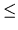

| Gears on a Board |
An engineering firm called ``Gears R Us" needs a program which can evaluate the operation of gears on a board. The board is a two-dimensional mounting plane which allows gears with two levels of teeth (an inside radius closest to the board and an outside radius away from the board). The gears rotate around the center of their diameter and interact by turning an adjacent gear which it touches (either on the inside or outside radiuss) with a equal tangential velocity. Angular velocity is the same for both the inside and outside radius gears.
``Gears R Us" uses square mounting boards which have a
300×300 grid
of mounting holes on 1 cm centers. When viewing the board, the lower left
of the board is position x = 1, y = 1; the upper right of the board is
position x = 300, y = 300. The gears mount only on mounting holes and are
available with integer inside and outside radii between 1 and 100. The
``motor" gear is the only original source of energy of any board and is
actually a gear (powered from behind the board) subject to all the
restrictions described for gears above. The following diagram shows a
sample configuration.
In the above example, the motor is at location x = 20, y = 100; the inside and outside radii of the gears the motor drives are both 5 centimeters, and the motor is rotating to the left (counter-clockwise) at 300 RPM's. By observation and computation, you can see that the motor touches (without overlapping) the inside radius of Gear #1. The inside radius of Gear #1 touches the inside radius of Gear #2 and Gear #3. The outside radius of Gear #3 touches the outside radius of Gear #4; the inside radius of Gear #4 touches the inside radius of Gear #5.
Given the data in the above example, it is possible to compute that Gear
#1 rotates to the right (clockwise) at 83.33 RPM's; Gear #2
rotates to the left (counter-clockwise) at 187.50 RPM's; Gear #3
rotates to the left at 150.00 RPM's; Gear #4 rotates to the right
at 281.25 RPM's; and Gear #5 rotates to the left at 33.75 RPM's.
Although this example does not include any off-nominal conditions,
``Gears R Us" needs your program to isolate two error conditions. The
first error occurs when two or more gears would overlap at either the
inner or outter radius. The second error condition occurs when any gear
is being driven at two or more different speeds. It is valid for two or
more gears to drive another gear at the same speed (and in the same
direction).
It is possible for a warning condition to occur when 1 or more gears are
idle (ie rotation = 0.0). If this condition occurs, your program will
have to print a warning message as described below.
The first two integers are the x, y coordinates of the
motor (
1x, y300); the next two integers are the inside and
outside radii of the motor gear respectively (
1ir, or100); the
fifth integer is the rotational velocity (
1abs(AV)1000) of the
motor in RPM's (negative representing counter-clockwise rotation and
positive representing clockwise rotation); the sixth integer is the
number of gears (
1NG20) excluding the motor that are mounted on
the board.
Each of the following NG lines contain exactly 4 integers
representing gears 1 through NG respectively. The first two integers
represent the x, y coordinates (
1x, y300) of the gear and the
second pair of integers represent the inside and outside radii of the
gear respectively (
1ir, or100).
If there are no errors, lines 2 through NG+1 of the output set should
contain the gear number right-justified in columns 1 and 2, a colon in
column 3, either a `L' for counter-clockwise rotation of the gear or a
`R' for clockwise rotation in column 5, and the magnitude of the
rotation always printed with two digits to the right of the decimal
point and are left-justified starting in column 7. If any gear has
rotation of magnitude zero, you should print the message
``Warning -- Idle Gear" in columns 5 through 24 instead of the rotation direction and
magnitude.
If there is an error, your program should print only the first line
containing ``Simulation #X" and a second line containing only one of
two error messages left-justified in column 1. If there is an overlapping
of two or more gears at either in inner or outter radii, your program
should print the message ``Error -- Overlapping Gears". If there is any
gear which is being driven by two or more different vectors, your
program should print the message ``Error -- Conflicting Gear Rotation".
Your program should give precedence to the overlapping error condition.
The last line of output for each output set should be an empty line.
20 100 5 5 -300 5 43 100 18 10 43 74 8 4 71 100 10 15 94 100 3 8 122 100 25 6 20 100 5 5 -300 5 43 100 18 10 43 74 8 4 71 100 10 10 89 100 3 8 105 100 25 6 20 100 5 5 -300 5 43 100 18 10 43 74 8 4 71 100 10 10 89 100 3 8 125 100 25 6
Simulation #1 1: R 83.33 2: L 187.50 3: L 150.00 4: R 281.25 5: L 33.75 Simulation #2 Error -- Overlapping Gears Simulation #3 1: R 83.33 2: L 187.50 3: L 150.00 4: R 187.50 5: Warning -- Idle Gear